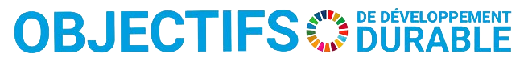

Pourquoi créer A.M.A.R ?
Shireen et Lorena, nous sommes deux cousines, qui avons pour motivation profonde d’apporter une aide à notre
pays El Salvador et laisser une empreinte.
Nous souhaitons donner la
possibilité à d’autres personnes d’adhérer à notre projet afin de le faire perdurer pour les générations
futures.
Mais par où commencer ?
Que pouvons-nous apporter ?
Finalement c’est l’histoire d’Adrien qui nous a amenées à notre projet.
Adrien est né au Salvador
en 2016 avec le syndrome Arnold Chiari type 2. Il a été hospitalisé pendant 6
mois à l’hôpital Benjamin Bloom, le seul hôpital pédiatrique public au Salvador.
Pour ses 14 mois, toute la famille emménage en France et Adrien a bénéficié des meilleurs soins et suivi,
grâce aux différentes structures du pays.
Dans ce quotidien et au
contact avec les équipes soignantes et les autres parents, Shireen, sa maman, a vu le moyen de pouvoir aider
les personnes au Salvador.
Un jour de discussion et de rêverie à
propos de nos envies de faire le lien entre la France et El Salvador, Shireen partage avec Lorena son idée...
et c’est là que le projet A.MA.R voit le jour.

Adrien
L’association et le Développement Durable
Nous contribuons à une économie circulaire par la réutilisation du matériel et à la préservation de notre environnement en évitant les déchets inutiles. Répondant ainsi à certains des objectifs définis par les Nations Unies

Cible 3.8 : réutilisation du matériel médical peut contribuer à améliorer l'accès aux soins de santé de qualité.
Cible 11.6 : contribuer à des communautés plus durables en réduisant l'impact environnemental des déchets médicaux.


Cible 9.5 : favoriser l'innovation en développant des modèles durables pour les soins de santé.
Cible 12.5 : réduire le gaspillage en prolongeant la durée de vie des équipements médicaux et en réduisant la production de déchets médicaux.


Cible 10.2 : améliorer la qualité des soins dans les régions défavorisées. réduction des inégalités en matière de revenus, de genre, d'âge et d'origine.
Cible 17.16 : coopération entre des entités privés et publiques pour développer des initiatives de réutilisation efficaces et durables.